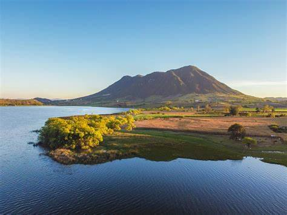
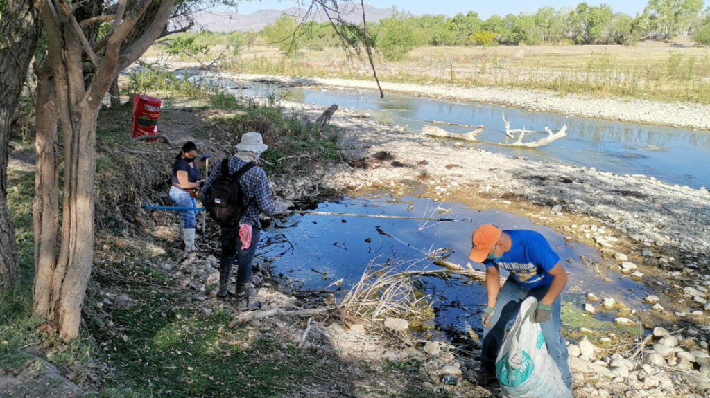

San Pedro Lagunillas es un municipio situado en la region centro-sur del estado de Nayarit, Mexico. Limita al norte con el municipio de Tepic, al este con San Blas, al sur con Xalisco, y al oeste con el municipio de Bah a de Banderas. El municipio es conocido por su belleza natural, rodeado de monta as y r os.
En San Pedro Lagunillas, una de las festividades mas importantes es la fiesta en honor a su patron, San Pedro, que se celebra el 29 de junio con procesiones, danzas y musica. Ademas, se celebran fiestas locales con actividades culturales y religiosas durante el a o, promoviendo la unidad de la comunidad.
San Pedro Lagunillas es un municipio con una economia basada principalmente en la agricultura, destacandose la produccion de maiz, frijol, chile y hortalizas. Tambien se cultivan frutas como la guanabana y el mango. La ganaderia es otra de las actividades economicas relevantes, con la cria de ganado vacuno y caprino.
